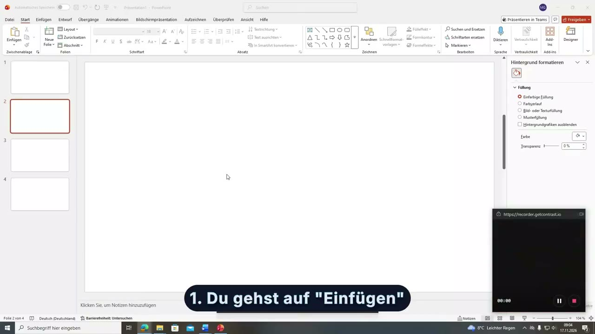
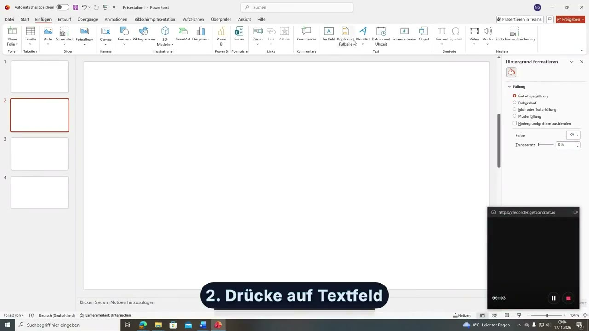
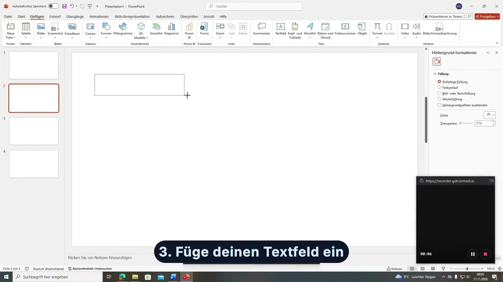
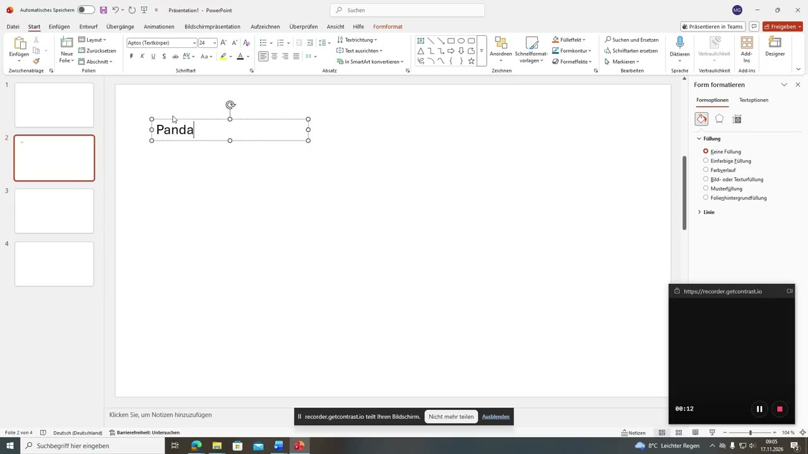
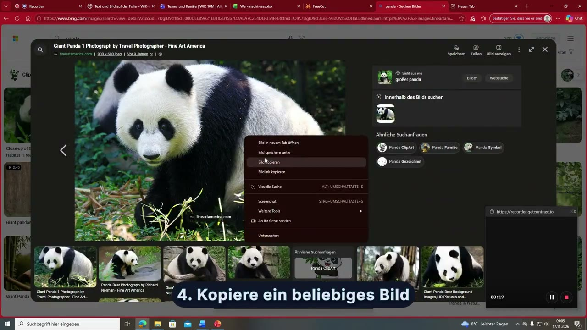
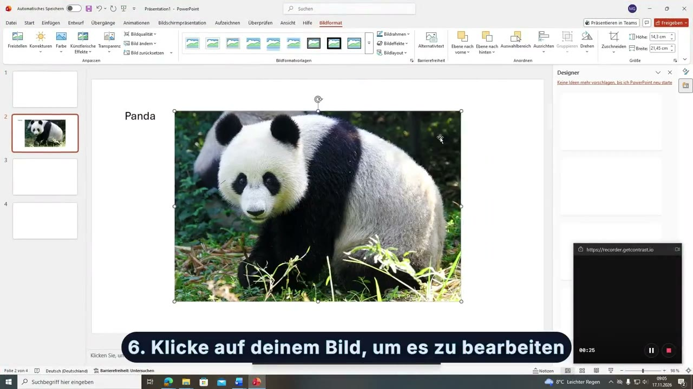
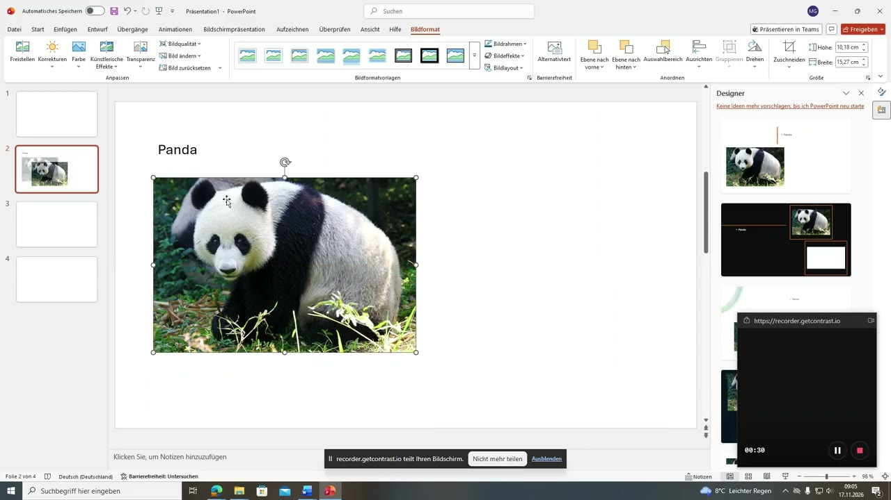
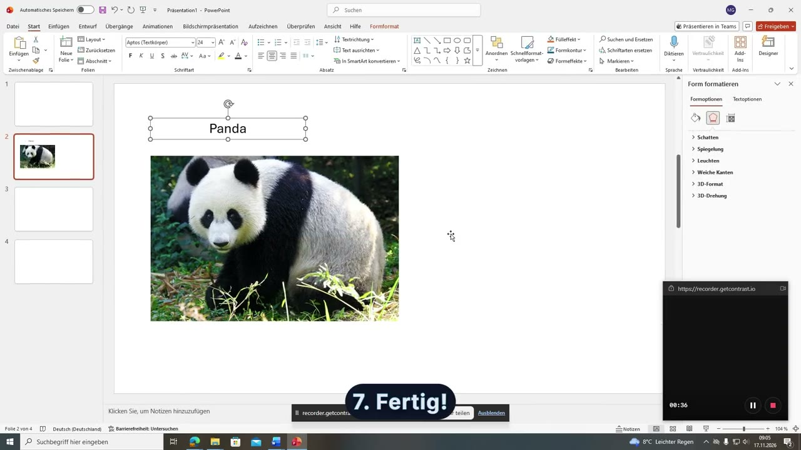

Text und Bild auf der Folie
Erklärvideo, 38 Sekunden, ohne Ton | |
| Bereich | PowerPoint |
|---|---|
| Programm | PowerPoint |
| Tastenkürzel | Einfügen: Strg + V |
| System | Windows 10 und 11 |
| Dauer | etwa 3 Minuten |
| Autor | MG |
| Fassung | v1, von der Lehrkraft ergänzt |
Auf einer Folie steht meist ein Text und ein Bild. Hier lernst du, wie du ein Textfeld einfügst, ein Bild aus dem Internet auf die Folie bekommst und es in Größe und Position anpasst.
1 Anleitung
1. Gehe auf „Einfügen“
Öffne oben in PowerPoint den Reiter Einfügen.


2. Drücke auf „Textfeld“
Klicke im Reiter Einfügen auf Textfeld.


3. Füge das Textfeld ein
Halte die linke Maustaste gedrückt und ziehe auf der Folie ein Rechteck auf. Lass dann los.


4. Schreibe deinen Text
Klicke in das Textfeld und tippe den Text, im Video „Panda“. Die Größe der Schrift stellst du im Reiter Start bei der Schriftgröße ein.


5. Kopiere ein Bild
Suche im Browser ein Bild. Klicke mit der rechten Maustaste darauf und wähle Bild kopieren.


6. Füge das Bild ein
Gehe zurück zu PowerPoint, klicke auf die Folie und drücke Strg + V. Das Bild erscheint auf der Folie.


7. Bearbeite das Bild
Klicke auf das Bild. An den Ecken kannst du es mit gedrückter Maustaste größer oder kleiner ziehen. Zum Verschieben ziehst du in die Mitte des Bildes.


8. Fertig
Die Folie hat jetzt einen Text und ein passendes Bild.


2 Typische Fehler und Tipps
- Bild verzerrt? Ziehe das Bild nur an den Ecken, nicht an den Seiten in der Mitte. So bleiben die Proportionen gleich.
- Text zu klein? Auf einer Folie soll der Text groß und kurz sein. Er muss auch von hinten im Raum lesbar sein.
- Hilfslinien: Beim Verschieben zeigt PowerPoint farbige Linien, wenn zwei Objekte auf einer Linie liegen. So richtest du Text und Bild sauber aus.
- Urheberrecht: Nimm nur Bilder, die du verwenden darfst, zum Beispiel selbst gemachte oder frei lizenzierte. Auf dem Bild dürfen keine Gesichter von Mitschülern zu sehen sein.